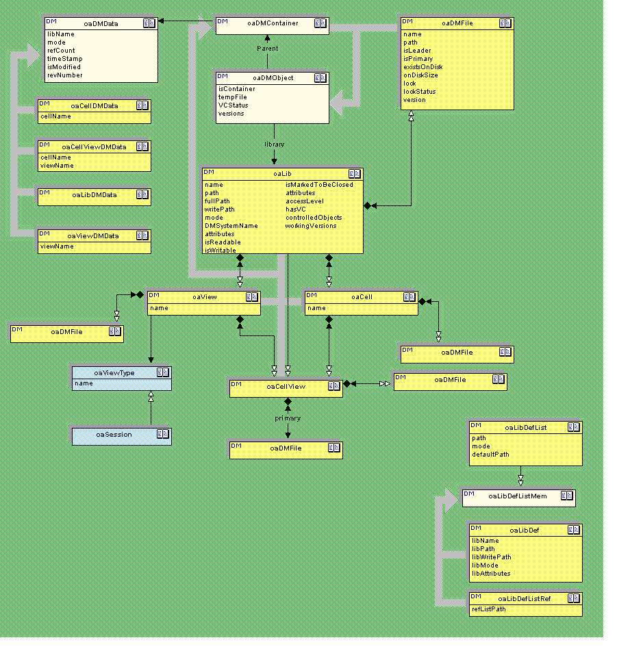
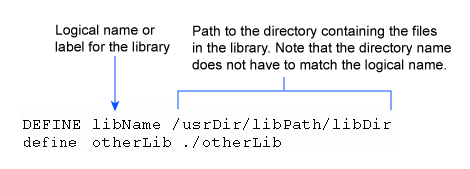
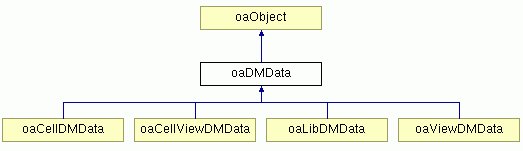
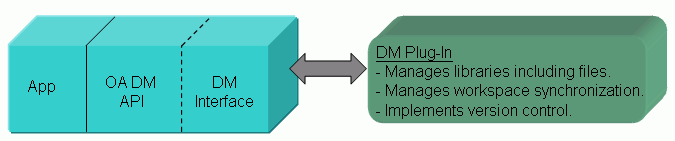
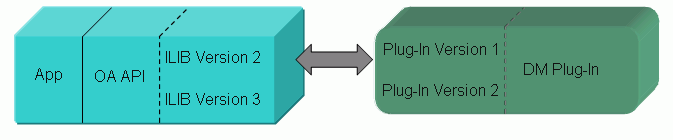
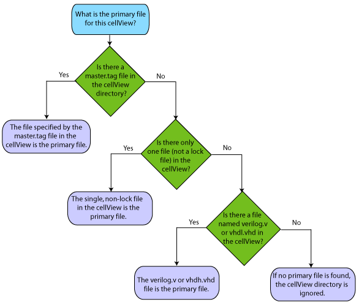
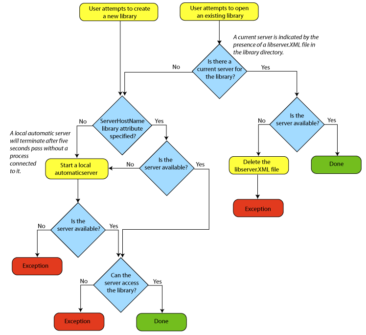

|
 |
 |
||||||
|
|
|
||||||
OpenAccess supports a library structure for organizing all the data files that apply to a set of designs. This structure organizes the files into libraries, cells, and views. It can be used for all data files that applications store, not just the databases that OpenAccess manages inside these libraries. OpenAccess provides an API that lets applications use this structure and synchronize their access to the library files.
OpenAccess also provides an API for accessing version control for library files, though a third-party implementation is required to actually use these functions.
Library file storage, synchronization, and version-control is handled through a DM system. OpenAccess uses a plug-in infrastructure that lets an application choose a specific DM system at runtime when it creates libraries. Each DM system has its own techniques for storing the data files in a library. Accordingly, OpenAccess applications should not make assumptions about where the library data files exist on disk. Instead, applications should always use the API to access this data.
OpenAccess provides two DM systems:
An OpenAccess library consists of design data files, auxiliary files, and the relationships between them. The following is a schema representation of the primary classes of the OpenAccess DM data model. These classes comprise the OpenAccess DM API through which an application can create, access, and manage OpenAccess libraries and the files they contain.
A library (oaLib) is the
top level organization of the design data. Each library is represented by a
directory on disk, and its contents are managed by the selected DM system.
Libraries have several different roles.
You can store all these types of data in a single library. However, the reference data and technology parameters are typically stored in a single library.
A library is also a logical container object that contains cells (oaCells), views (oaViews), cellViews (oaCellViews), and files (oaDMFiles).
An oaCell is a container object that contains oaCellViews and oaDMFiles. A single oaCell contains the data that describe an individual building block of a chip or system. An oaCell can contain multiple oaCellViews, each of which represent a different view of this oaCell.
An oaView is a container object that contains oaCellViews and
oaDMFiles. Different views can represent levels of abstraction for a design
(behavior or gate), or different stages in the design process (RTL,
post-synthesis, placed, or routed.)
Each view has a designated viewType, which is persistent. The oaViewType session object
represents a single viewType for the current session.
There are several reserved viewTypes used by OpenAccess, which are represented
in the oaReservedViewTypeEnum. You can specify the view type with the viewType
argument to oaDesign::open.
These viewTypes represent valid viewTypes for a design database (oaDesign):
|
viewType
|
Enumeration
|
|---|---|
| "maskLayout" | oacMaskLayout |
| "schematic" | oacSchematic |
| "schematicSymbol" | oacSchematicSymbol |
| "netlist" | oacNetlist |
| "oaHierDesign" | oacHierDesign |
This viewType is for a wafer database (oaWafer):
|
viewType
|
Enumeration
|
|---|---|
| "wafer" | oacWafer |
These viewTypes represent external standard viewTypes. These viewTypes do not
have corresponding OpenAccess database representations.
|
viewType
|
Enumeration
|
|---|---|
| "verilogAMSText" | oacVerilogAMSText |
| "VHDLAMSText" | oacVHDLAMSText |
| "verilogText" | oacVerilogText |
| "VHDLText" | oacVHDLText |
| "verilogAText" | oacVerilogAText |
| "systemVerilogText" | oacSystemVerilogText |
| "SPECTREText" | oacSPECTREText |
| "SPICEText" | oacSPICEText |
| "HSPICEText" | oacHSPICEText |
| "CDLText" | oacCDLText |
An oaCellView is a container object that contains oaDMFiles. oaCellViews can also contain OpenAccess databases such as oaDesign or oaWafer. An oaCellView has a parent oaCell and a parent oaView. An oaCellView always has a single oaDMFile that holds the primary data for the oaCellView and is known as the primary file. This correlates to the master file definition in previous versions of OpenAccess. The viewType attribute of the parent oaView determines the type of the primary file. The primary oaDMFile can be empty (or not exist on disk).
Note: oaDesign::open creates oaCells, oaViews, and
oaCellViews as needed so that the oaCellView being referenced will exist.
Typically, the viewType of an oaView that OpenAccess creates in such cases will
be one of the reserved viewTypes for oaDesigns. However, if you use oaDesign::open
on a pre-existing oaCellView with a viewType other than an oaDesign viewType, the operation succeeds, but the database read or
written is not the primary oaDMFile of the oaCellView.
Files saved in an OpenAccess database are represented in the API with the oaDMFile class. Any number of oaDMFiles can exist in any of the library containers: oaLibs, oaCells, oaViews, or oaCellViews.
An oaDMFile represents a file that has been registered by a design management
(DM) system, but that file need not yet exist on disk. An oaDMFile is created
with an oaDMFile call, such as oaDMFile::create. The actual file
on disk can be created by applications outside of the OpenAccess API as well as
by higher level calls, such as oaDesign::save.
An oaCellView has a special oaDMFile known as the primary oaDMFile. The format of the primary oaDMFile reflects the viewType of the oaView containing the oaCellView. Note that the primary oaDMFile of an oaCellView always exists even if the file it represents does not yet exist on disk.
oaDMFiles can be associated with each other using a leader-follower association. Associations are single level only. An oaDMFile can be associated with only one leader. Associations are within containers only. When the leader is destroyed, moved, or copied, the operation is applied to all followers. When a version-control operation is applied to the leader, the operation is also applied to all the followers under version control. Version control operations may only be applied to a leader. A primary oaDMFile can be a leader, but it cannot be a follower.
OpenAccess lets you work with libraries by using a library definition file, which is a list of the logical names and paths for the libraries in your project. You can use a library definition file to open all your pre-existing libraries at once. Using a library definition file is not required -- you can simply open libraries using the APIs.
OpenAccess provides a plug-in interface and a default plug-in (oaLibDef) for working with library definition files. For information about creating a library definition file plug-in, refer to How to Write a Library Definition File Plug-In.
OpenAccess can open existing libraries by reading a library definition file and
opening all of the libraries defined in it. OpenAccess reads the library
definition file when oaLibDefList::openLibs()
is called.
There are three types of keyword statements that you can use in a lib.defs
file:
lib.defs file.
lib.defs file. Relative paths are interpreted relative to
the directory containing the lib.defs file.
Keywords are case insensitive. An end of line (EOL), end of file (EOF), or comment character terminates an entry in a lib.defs file.
A library is defined in the library definition file by using the DEFINE
keyword, followed by a logical name or label for your library, followed by the
path to the directory containing the cells.

You can use the the following syntax when specifying library paths in a library definition file.
./
|
Path relative to the location of the lib.defs file
|
../
|
Path relative to the location of the lib.defs file
|
|
Path that uses environment variables that are expanded in place |
~/
|
UNIX path (only on UNIX platforms) |
~user/
|
UNIX path (only on UNIX platforms) |
Relative paths are interpreted relative to the directory
containing the lib.defs file. Note that if the lib.defs
file is symbolically linked to a target lib.defs in a different
directory, the relative paths are resolved with respect to the target lib.defs
file.
The logical name for the library is always interpreted as a name in the UNIX namespace.
The path to the library directory is not name mapped.
You can use the INCLUDE statement to include all the
libraries listed in a different lib.defs file, as follows:
INCLUDE /usrDir/libs/lib.defs INCLUDE ../lib.defs
Certain attributes can be specified using the ASSIGN
keyword. Permanent attributes that must apply to all users of a given library
are specified in the call to create the library, not in a library definition
file.
The supported set of attributes is defined by a given DM system implementation.
You can use the ASSIGN statement to assign
attributes to a library. The syntax is as follows:
ASSIGN libName attrName attrValue
OpenAccess DM supports attributes for library mode and the library write path:
ASSIGN libName libMode <mode> ASSIGN libName writePath <tempFileWritePath>
Where
<mode>is eithersharedornonShared, and<tempFileWritePath>is the write path for the library.Note:
<mode>can also bereadOnly, but this mode is not currently supported by the provided OpenAccess DM systems.
All other attributes are passed to the plug-in when the library
is opened, so plug-in specific attributes should be passed in using oaLib::open.
Use the pound character (#) at the beginning of a line for comments. You can also include inline comments by placing a pound character with a space after it, followed by your comment text.
A library definition file has a format and syntax similar to the cds.lib
file used by earlier versions of OpenAccess, except that UNASSIGN,
UNDEFINE, SOFTDEFINE, and SOFTINCLUDE statements
are not supported. Unlike the cds.lib file, the lib.defs
file does not have special provisions for library paths relative to the Cadence
installation root. Also, the old style for comments, which was two dashes (--),
is not supported.
OpenAccess performs a standard search for a library definition file if you call
oaLibDefList::openLibs with no arguments.
OpenAccess searches in three locations for a file named lib.defs:
./lib.defs$HOME/lib.defsdata directory in your installation hierarchy: <install_dir>/data/lib.defsNote: <install_dir> is the top
installation directory for OpenAccess. It is determined from the location of
the OpenAccess shared libraries in use in the current session. For example, on
UNIX, the default <install_dir> is /opt/OpenAccess
, and on Windows, the default is C:\Program Files\OpenAccess.
You can open the libraries in a specific named library definition file and avoid using the standard search outlined previously. For example:
oaLibDefList::openLibs("../project.defs");
When an application creates a library, the new library should be recorded in the library definition file. First, use oaLibDefList::get in append mode to open the library definition file object, then use oaLibDef::create to add the entry.
To delete an entry from the list, use oaLibDefList::get in append mode, then iterate through the members using oaLibDefList::getMembers. Use oaLibDefListMem::destroy to delete the entry you want.
When finished modifying a library definition file, use oaLibDefList::save.
The OpenAccess translators provide an example of how applications use libraries
and update lib.defs files. See How Translators Use Libraries for details.
You create a library by specifying the name and path (relative or absolute) to the library. It is an error if a library with the same name already exists or if a non-empty directory exists at the specified path. You can specify the DM system and any DM attributes at library creation time.
oaUnixNS unixNS;
oaScalarName libName(unixNS, "libName");
oaLib::create(libName, "/usr/libName", mode = oacSharedLibMode, dmSystem = "oaDMTurbo")
You can specify the current working directory for the library path if the current working directory is empty.
When oaLib::create creates a library directory, it provides the following permissions.
A pre-existing library can be opened with the oaLib::open function.
The following must be true in order for oaLib::open to be
successful:
// Check whether the library has already been opened. oaLib *lib1 = oaLib::find(libName);
// If the library is not open, open it.
if (!lib1) {
lib1 = oaLib::open(libName, libPath);
}
The access mode for a library can be specified when the library is opened using
oaLib::open. When using oaLibDefList::openLibs, the
access mode can be specified by an ASSIGN statement in the library
definition file.
OpenAccess provides shared, non-shared, and read-only library access modes, with the default being shared. Each mode is valid only if the DM system implementation supports it.
Examples
To specify the library access mode using oaLib::open:
oaLib * open (myLib, "/usr/MyLibs/Cell_1", oacReadOnlyMode);
To specify the library access mode in the library definition file:
DEFINE libName /usrDir/libPath/libDir
ASSIGN libName libMode nonShared
DEFINE otherLib ./otherLib
ASSIGN otherLib libMode shared
Each oaLib contains a number of objects such as oaCells, oaCellViews, and oaDMFiles. Applications must establish access to the library in order to traverse to these objects. That access is established for short periods of time so that libraries can be efficiently shared among multiple processes.
Applications call oaLib::getAccess
on a library to establish this access, then oaLib::releaseAccess when finished with the current
traversal. All pointers to DM objects (other than the oaLib itself) become
invalid as soon as the access is released.
The DM plug-in system controls the access validation and synchronization. For example, the Turbo DM system will allow either a single process to have write access to a given library, or it will allow multiple processes to have read access. If there are processes with read access when a write access is requested, the process requesting write access must wait for the readers to release access. If there are processes with write access when a process requests read or write access, then the processes requesting read or write access must wait.
In some cases, library access can be established internally by OpenAccess. For
example, creating a design database with oaDesign::open() in 'w'
mode may create the oaCell, oaView, oaCellView, and the oaDMFile that will hold
the database. OpenAccess will establish write access to the library to enable
these create operations during the open call.
Access requests can be nested. Write access requests may only be nested under other write access requests, so they may only appear when the outermost request is a write request. When the outermost access is a read request, further nesting can only be for read requests. Each request in a set of nested requests must be released. The process does not give up its access to the library until all of the current requests are released.
Deadlocks between access requests might occur. For example, there might be a deadlock between library access requests from different clients. To handle this, a request to get access has a timeout with a default value. The application can control the timeout value through the access request.
Code Example - Getting the Primary File in a oaCellView
This example shows a read access being used to get the path to the primary file in a oaCellView.
oaNativeNS nameSpace;
oaScalarName(nameSpace, "viewName");
if ( lib1->getAccess(oacReadLibAccess) ) {
oaCell *cell = oaCell::get(lib1, oaScalarName(nameSpace, "cellName"));
oaView *view = oaView::get(lib1, oaScalarName(nameSpace, "viewName"));
oaCellView *cv = oaCellView::get(cell, view);
oaDMFile *cvfile = cv->getPrimary();
cvfile->getPath(filePath);
lib1->releaseAccess();
}
You can create properties and extensions on oaDMObjects such as oaLibs and oaDMCellViews. To support this, each of these oaDMObjects has an associated oaDMData object that is used to store this information. For example, an oaLibDMData object stores properties and extensions for an oaLib.

Each oaDMData object is a small database that can be opened and closed like the other OpenAccess databases.
An oaDMData database can be opened using the pointer to its corresponding oaDMObject. To do this, open oaDMData while you have access to its library so that the pointer is valid. For example:
oaDMData * cellProps = oaDMData::open(myCell, 'a');
An oaCellDMData object can also be opened using the name of its container. For example:
oaCellDMData * cellProps = oaCellDMData::open("lib", "cell", 'a');
In this case, the open call does not have to occur while access to the library is established. OpenAccess handles this for you. See the API documentation for information about how to open oaCellViewDMData, oaLibDMData, and oaViewDMData objects.
Once an oaDMData object is open, you can put properties or extensions on it through the standard methods. For example:
oaStringProp::create(cellProps, "example", "exampleString");
You can access properties in the same manner:
oaProp::find(cellProps, "int", "example");
The OpenAccess plug-in architecture lets applications choose a specific DM system at run time. This DM system is not linked into the application when the application is built, and may not have even existed when the application was built. Rather, it is in a shared library that is loaded dynamically when OpenAccess creates or loads a library.

This plug-in architecture also allows OpenAccess to provide a versionable interface between the standard OpenAccess implementation and a specific plug-in implementation. The term versionable interface refers to the ability to smoothly introduce a new version of the programming interface that changes function signatures and semantics without breaking existing applications, or preventing implementations of the old interface from working with new applications. Hence changed versions of these interfaces can be adopted gradually.

OpenAccess is supplied with two DM plug-ins. The Filesys DM system supports directory-based libraries. The Turbo DM system supports server-based libraries. When a library is created through the OpenAccess API, the caller must specify the name of the DM system that manages the new library. All subsequent access to this library automatically uses the DM system specified when the library was created.
The FileSys DM system organizes library information using the directory structure of the file system. Cells are created as directories in the library directory, and oaCellViews are created as directories in the cell directory. The cell name and the view name determine the cell directory name and the oaCellView directory name, respectively. FileSys is a production quality DM system that provides backward compatibility with previous versions of OpenAccess.
To create a library using the FileSys DM system, use "oaDMFileSys"
as the dmSystem argument to oaLib::create.
You can also specify the DM system when running OpenAccess translators that create libraries. See How Translators Use Libraries for details.
In the FileSys DM system, a particular file in the oaCellView directory is identified as the primary file. The primary file represents the data for the oaCellView.
The following figure shows how FileSys determines the primary file for a oaCellView

When an oaCellView is created, a master.tag file and a primary file
are typically created by FileSys. If nothing has been saved, the primary file
has a zero length. Note that a database with a zero length does not represent
valid data. If OpenAccess attempts to read such a database, an exception is
thrown.
Using oaDesign::destroy on a FileSys design does not remove the oaCellView directory. Rather, the on-disk design data is removed and the primary file becomes a zero length file.
The viewType of a FileSys oaCellView is determined from the viewType of the primary file. If the primary file (and thus the viewType) of a oaCellView cannot be determined, the oaCellView is ignored.
For reserved viewTypes, the file names of
the primary files
are predefined. Accordingly, OpenAccess can look at a primary file, such as layout.oa,
and map it to the predefined viewType of maskLayout. Also, if you create a new
oaCellView with one of the reserved viewTypes, OpenAccess creates a zero
length primary file with the correct predefined file name.
The following table lists the reserved viewTypes and their associated primary file names.
|
viewType
|
Enumeration
|
Associated OpenAccess File
|
|---|---|---|
| "maskLayout" | oacMaskLayout | layout.oa |
| "schematic" | oacSchematic | sch.oa |
| "schematicSymbol" | oacSchematicSymbol | symbol.oa |
| "netlist" | oacNetlist | netlist.oa |
| "oaHierDesign" | oacHierDesign | hierDesign.oa |
| "wafer" | oacWafer | wafer.oa |
| "verilogAMSText" | oacVerilogAMSText | verilog.vams |
| "VHDLAMSText" | oacVHDLAMSText | vhdl.vhms |
| "verilogText" | oacVerilogText | verilog.v |
| "VHDLText" | oacVHDLText | vhdl.vhd |
| "verilogAText" | oacVerilogAText | verilog.va |
| "systemVerilogText" | oacSystemVerilogText | verilog.sv |
| "SPECTREText" | oacSPECTREText | spectre.scs |
| "SPICEText" | oacSPICEText | spice.spc |
| "HSPICEText" | oacHSPICEText | hspice.hsp |
| "CDLText" | oacCDLText | netlist.cdl |
OpenAccess has a methodology for naming the primary file when you create an
oaCellView with a custom view type. If the custom viewType name you provide has
a period (.) in it, the name of the primary file created will be the same as
the name of the viewType. Otherwise, the primary file is named <viewType>.file.
So, if you provide a viewType name of a.b, the primary file is
named a.b. If OpenAccess encounters this primary file, it can identify
that the file has a custom viewType named a.b. If you provide a
viewType name of myType, the primary file is named myType.file.
If OpenAccess encounters this primary file, it can identify that the file has a
custom viewType named myType.
If you use oaDesign::open on a oaCellView that has a viewType other
than an oaDesign viewType, the operation
succeeds, but the database read or written is not the primary file of the
oaCellView.
You can specify the version control system for the library by using the oaLib::create function and specifying the corresponding attribute.
|
Attribute
|
Description
|
|---|---|
| "VCSystem" | Name of the VC system for this library. There are no VC systems supplied with OpenAccess. |
| "libReadOnly" | Specifies whether or not applications can modify the library and its contents. The legal values are "yes" or "no". This attribute can be set to "yes" to indicate that the library is a read-only reference library. If set to "yes", OpenAccess is always able to perform partial reading of the data, which can improve performance. If set to “no” (the default), and the library is being accessed
across an NFS or AFS network, and the file system permissions prevent
OpenAccess from modifying the library, OpenAccess will read database files
completely into memory when they are first accessed. |
| "origFileSystem" | Specifies the original file system on which the library was created with regards to how file and directory names are mapped. On “Unix” file systems, file and directory names are case-sensitive and case preserving, and the oaUnixNS namespace is used to map logical names to file system names. On the “Windows” file system, file and directory names are case-insensitive and case preserving, and the oaWinNS namespace is used to map logical names to file system names. This attribute is useful if libraries will be accessed across the different file systems. |
When an application requests a lock on a file (see oaDMFile::getLock), the OpenAccess DM system is responsible for ensuring that only one process has a lock on that file at a given time. Note that applications can request a lock on any file in a library. In addition, OpenAccess databases automatically lock any database files that are open for ‘w’rite or ‘a’ppend.
The FileSys DM system implements locks by writing a lock file in the same
directory as the file being locked, The name of the lock file is the name of
the file being locked with a .cdslck suffix. The lock file
contains information about when the lock file was created and who created it,
for example:
LockStakeVersion 1.1 LoginName user7 HostName pc-user7.global.cadence.com ProcessIdentifier 3468 ProcessCreationTime_UTC 1102386083 ProcessCreationTime_Readable 12/06/04 18:21:23 Pacific Standard Time AppIdentifier OpenAccess FileSys DM Plug-In OSType win32 ReasonForPlacingEditLock OpenAccess edit lock FilePathUsedToEditLock c:\dev\oa\test\testDir\dmFileLockLib\lcell1\lview1\layout.oa.cdslck TimeEditLocked 12/06/04 10:22:16 Pacific Standard Time
A file that has a lock file owned by an active process cannot be locked by another process. Instead, the lock request will fail. If the lock request was generated by OpenAccess for oaDesign::open, then an oacCannotLockDatabase exception is thrown.
During normal operation, FileSys removes any remaining locks that it created during the run when the process exits. However, in certain situations, FileSys is not able to clean up the locks before shutdown. For example, this might occur if the program crashed or a system was removed from the network. In these cases, stale lock files might remain in the library.
When an application asks the OpenAccess DM system to lock a file in a FileSys library, FileSys first checks to see if that file already has a lock file. If there is no lock file, FileSys creates one.
If there is a lock file, FileSys attempts to determine if the process that owns the lock file is active. In order for FileSys to determine if a process is active on another machine, that machine must have a lock recovery daemon running. If the daemon on the other machine is running and the process holding the lock is active, FileSys denies the lock request because the file is in use. If the daemon on the other machine is running and the process holding the lock is not active, FileSys removes the old lock and creates a new one for the current process. If no daemon is running on the other machine, FileSys assumes that the process that created the lock file is active and does not remove the lock.
In order to provide the lock recovery daemon for use by lock requests on other machines, FileSys ensures that the current machine has a daemon running whenever it opens a FileSys library. If one is not already running, FileSys will attempt to start it. Note that the daemon must be on the host that is setting the lock, not necessarily the host on which the library is stored.
The OpenAccess FileSys lock recovery daemon is called oaFSLockD and
is located in <install_dir>/bin/<platform>/<mode>/.
This daemon is run automatically when FileSys libraries are opened, so users do
not have to run it explicitly. Sometimes it is beneficial to run this daemon at
start-up time. This approach will cover the case in which the locking host has
rebooted from a crash, but no FileSys application has yet run on that host. To
start the daemon, you may execute the script at
<install_dir>/bin/oaFSLockD.
Lock recovery is not perfect. For example, when a host owning a lock crashes, its lock cannot be recovered while it is down. Another host that tries to recover that lock cannot distinguish a crash of the locking host from a network error that prevents communicating with its daemon. Hence FileSys will assume that the lock is valid. In cases like this, users must delete lock files manually.
Compatibility Note: This locking mechanism is designed so that
FileSys will respect locks created by OpenAccess 2.0 programs and older Cadence
Software. However, it uses a different lock recovery daemon that communicates
on a different port number. The older lock recovery daemon is called clsbd.
Hence a lock set by a host that is only running OpenAccess 2.0 applications
cannot be recovered by an OpenAccess 2.2 application. This is an unusual
circumstance because most files will only get locked by one or the other
version of the locking software.
In FileSys, the cell directory name and the view directory name are name mapped versions of the cell name and view name. If the library is created on a UNIX file system, the cell and view directory names are mapped to the UNIX namespace. Likewise, if the library is created on a Windows file system, the names are mapped to the Windows namespace, which is case insensitive.
You can copy a library from a UNIX platform to a Windows platform as long as you do not have two cell directory names or two view directory names (in the same cell) that differ only in case. When you copy a library from a UNIX platform, the library is identified as a UNIX library and OpenAccess continues to use the UNIX namespace for the library.
The Turbo DM system is a server-based system. In this model, library meta-information is stored in a database that persistently records information such as which files belong to which cells and which views.
To create a library using the Turbo DM system, use "oaDMTurbo"
as the dmSystem argument to oaLib::create.
The Turbo DM system is released as Beta code and is subject to change.
You can specify the library attributes for each library with the oaLib::create
function.
You can also specify the DM system when running OpenAccess translators that create libraries. See How Translators Use Libraries for details.
There are two use models for working with the library server:
If you attempt to open or create a library, OpenAccess searches for a library server as follows:

You can set up a permanent server on a remote machine to serve library users on other systems. The server should be automatically started whenever the remote machine is booted. Specify the command to start the library server with the desired options in one of the system startup files.
When you run a permanent server to manage a library, make sure that the server can write files in the library. As long as this requirement is satisfied, you can protect the library directory however you like to control who can access the library.
If you want a stricter protection than the library permissions provided by OpenAccess when a library is created, you can
create the directory before oaLib::create turns it into a library. When this
model is used, you should create the library with the serverHostName
attribute naming the node where the server will be running. The serverLibPath and serverPortNum
attribute might also be used in this case.
To run the library server, use the following command:
oaDMTurboServer options
The command-line options are as follows:
|
Option
|
Description
|
|---|---|
| [-portNumber portNumber] | Port number that clients use to connect to this server.
Note: Use this option only if port number 55576 is already in use by another application. Otherwise, it is more straightforward to accept the default value. |
| [-logFile logFileName] | Full path to the log file, which records the operations of the server. Default value: server.slog
|
| [-logVerbosity verbosity] | Verbosity of the operation log:
|
| [-waitToClose timeout] | The time in seconds for the server to stay alive after the last client has disconnected. Typically, this is only used when the server is automatically started by the oaDMTurbo plug-in. |
| [-h | -help] | Prints help |
| [-v | -version] | Prints tool version information. |
A permanent remote server is typically used in combination with a lib.defs
file that is available on the network.
An automatic local server is started when
serverHostName
library attribute was not used to specify a remote server when the library was
created. Note that when a library is created with no serverHostName
or serverportNumber specified,
OpenAccess assigns a random port number between 55700 and 56699 for the library
server.
serverHostName specified, but the server cannot be connected
to.
Once started, the local server continues to run as long as a process has a library open that was served by the server. After the last connection is closed, the server exits if no new connection is made within five seconds.
The library server must always have write access to the library directory, even if the access mode is readOnly.
A server that is automatically started on the local system runs with the same user name and user ID as the process that caused it to start.
The OpenAccess auto save and critical save functionality supports saving the in-memory state of a database independent of other user initiated save operations. The auto save and critical save functionality provides functions that applications can use to backup and recover a design state during the normal course of a design session and in the case when a crash occurs. In addition to saving and recovering the in-memory state, support is also provided for common file management functions such as checking file existence and for destroying a recovery file when it is no longer needed.
The auto save operation occurs when the application explicitly calls the auto save API functions. The interval for performing an auto save operation is not set by the OpenAccess API but must be implemented separately by the application.
Critical save functionality is provided for saving the in-memory state of a database when a critical event or signal occurs such as a kill signal. The critical save functionality also includes API members for common file management tasks. Catching the signal that triggers a critical save operation is not part of the OpenAccess API, but must be provided by the application. As a minimum, this involves registering a signal handler that calls design->save(oacCriticalSave) after the signal is received and then proceeding in the application as necessary after receiving the signal.
The primary access to auto save and critical save functionality is through the oaDesign and oaTech objects. The oaDesign and oaTech classes include the following auto save and critical save functions:
oaDesign::save(oaSaveRecoverType type)
oaDesign::isRecovered()
oaDesign::recover(const oaScalarName &libNameIn,
const oaScalarName &cellNameIn,
const oaScalarName &viewNameIn,
oaSaveRecoverType type)
oaDesign::exists(const oaScalarName &libNameIn,
const oaScalarName &cellNameIn,
const oaScalarName &viewNameIn,
oaSaveRecoverType type)
oaDesign::destroy(const oaScalarName &libNameIn,
const oaScalarName &cellNameIn,
const oaScalarName &viewNameIn,
oaSaveRecoverType type)
oaTech::save(oaSaveRecoverType type)
oaTech::isRecovered()
oaTech::recover(const oaScalarName &libName,
oaSaveRecoverType type)
oaTech::exists(const oaScalarName &libName,
oaSaveRecoverType type)
oaTech::exists(oaLib *lib,
oaSaveRecoverType type)
oaTech::destroy(const oaScalarName &libName,
oaSaveRecoverType type)
oaLibDMData, oaCellDMData, and oaCellViewDMData objects also provide auto save and critical save functionality, but the preferred access is through the oaDesign and oaTech objects. The oaDMFileSys plug-in provides an auto save and critical save interface to the built-in DM system included with OpenAccess. Support for the Turbo DM system is not provided.
The auto save and critical save files are intended to be hidden from users and therefore use a special extension to prevent accessing as normal database files. The auto save file uses an oa- extension, and the critical save file uses an oa+ extension. These files do not support versioning and have no impact on internal calculations such as determining the primary file within an oaCellView. Though it is possible to access the auto save and critical save files directly, access through functions on the corresponding databases is preferred for managing these files.
The oaSaveRecoverType class defines the oaSaveRecoverTypeEnum enumeration for specifying either the oacAutoSaveType (oaAutoSave) file or the oacCriticalSaveType (oaCriticalSave) file. This is defined in the DM layer and referenced in both the OpenAccess and oaDMFileSys plug-in API functions.
The most common usage for checking existence and recovering an oaSaveRecoverType file employs the oaDesign and oaTech database functions. However, the oaDMFile class includes function overloads for managing the oaSaveRecoverType files. These are:
The oaLibDMData, oaCellDMData, oaViewDMData, and oaCellViewDMData classes provide functions for managing the auto save and critical save files. These classes include members for implicitly managing the auto save or critical save files that exist in the corresponding oaDMContainer for an object, and they also include functions for managing all the files in the oaDMContainer that are implied by specifying a library, cell, or view name.
The in-memory state is saved for backup and recovery by implementing either oaDesign::save(oacSaveRecoverType type) or oaTech::save(oacSaveRecoverType type). These functions use private implementations for accessing the DM system. The auto save and critical save files should always be created using these database functions.
In order to create an auto save or critical save file, the original source database must be opened in either write or append mode. It is an error if an auto save or critical save is attempted and the source database is open in read mode. This policy ensures that the user has the database locked for editing, and that the critical or auto save operation does not conflict with other processes that could attempt the same operation.
No observer notifications are issued during a critical or auto save operation. Only one auto save and one critical save database can exist in a container, and an existing auto save or critical save database file is overwritten when auto save or critical save operations are performed. This improves the possibility that the write to disk succeeds. When a critical or auto save operation is triggered, the isModified flag on the database is not affected, and the operation is performed regardless of whether the database has been modified or not. Further, the current state of the database undo stack is unaffected. For oaDesign databases, any associated parasitic databases are saved as well.
An implementation for performing a critical save is:
design->save(oacCriticalSaveType);
tech->save(oacCriticalSaveType);
If you open an auto save or critical save database, it is opened in read only mode, and the entire database is read into memory at once. A partial read of a recovery database is not supported.
If the original source database is in memory, it must be purged before opening a recovery database. It is an error if the original source database is open and in memory when attempting to read a recovery database. An implementation for purging a design from memory before opening a recovery database is:
design->purge();
No validity checking is performed when the recovery database is read into memory, and therefore, it is prudent for applications to perform data validity checks before replacing an original source database with the recovered data. The usual preOpen and postOpen observer notifications are issued when recovering a critical or auto save database.
An example implementation for recovering a design is:
if (oaDesign::exists(libName, cellName, viewName, oacAutoSaveType)) {
cout << "Recovering the auto save file\n";
design = oadesign::recover(libname, cellname, viewname, oacautosavetype);
}
As mentioned previously, this opens the recovery database in read-only mode. In order to save the recovery database, and replace the original source database, the recovery database must be reopened in append mode. An example implementation for accomplishing this is:
recoveredDesign = oaDesign::recover(libName, cellName, viewName, oacAutoSaveType);
recoveredDesign->reopen('a');
recoveredDesign->save();
recoveredDesign->close();
You can recover a tech in a similar manner. For example:
oaTech *recoveredTech = oaTech::recover(libName);
recoveredTech->reopen(‘a’);
recoveredTech->save();
recoveredTech->close();
The oaTech database supports the ability to have one library reference another library's tech database. This capability is known as tech attachment. For example, if library A is attached to library B, opening the tech for library A effectively opens the tech database that resides in library B. When saving critical and auto save databases for a tech, they are written to the library that the tech is located in regardless of any attachment. The oaTech auto save and critical save functions follow the attachments as needed.
A flag on the recovery database indicates that it is recovered. If a recovered database is saved and replaces the original database, the isRecovered flag is reset to allow the recovered database to fully replace the original source. The critical and auto save database files are left in place until destroyed. An example implementation to destroy an auto save database is:
if (oaDesign::exists(libName, cellName, viewName, oacAutoSaveType)) {
oaDesign::destroy(libName, cellName, viewName, oacAutoSaveType);
if (!oaDesign::exists(libName, cellName, viewName, oacAutoSaveType)) {
cout << "Auto save file removed successfully.\n";
}
}
After recovering a design, an application can check the validity of the recovered design before saving it. This is most useful when recovering a critical save file because a fault causing a critical save could leave a design in an inconsistent state. An example implementation is:
recoveredDesign = oaDesign::recover(libName, cellName, viewName, oacCriticalSaveType);
if (checkValidity(recoveredDesign)) {
recoveredDesign->reopen('a');
recoveredDesign->save();
} else {
// Error
}
Return to Programmers Guide topics

Copyright © 2001-2010 Cadence Design Systems, Inc.
All rights reserved.